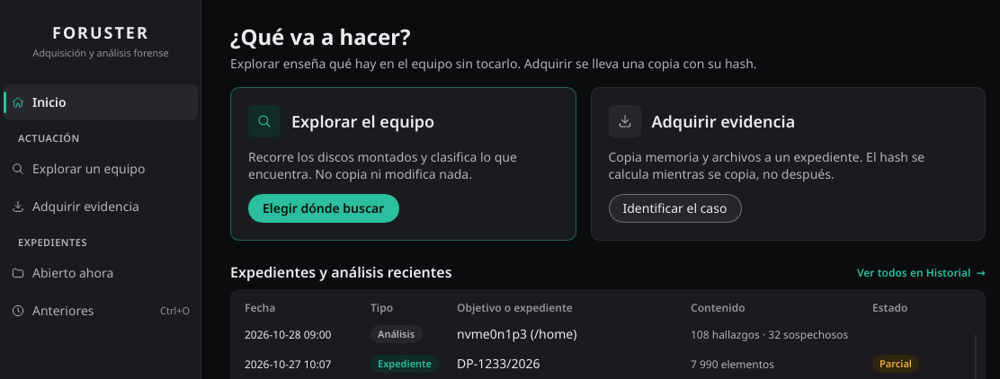

Requisitos
| Concepto | Requisito |
|---|---|
| Sistemas | Linux y Windows de 64 bits. |
| Despliegue | Desde un USB, sin instalar nada en el equipo intervenido. |
| Interfaces | Aplicación gráfica y línea de comandos. La interfaz de terminal solo explora. |
| Destino | Un soporte propio, nunca el disco de origen. Ver Destino. |
| Licencia | Solo para adquirir. Ver Licencia. |
Privilegios
Si faltan privilegios, Foruster lo dice y no presenta la adquisición como completa.
| Función | Hace falta |
|---|---|
| Memoria física (Linux) | Root. |
| Memoria de procesos (Windows) | Sesión de administrador. |
| Imagen de volumen, disco o instantánea | Root en Linux; sesión de administrador en Windows. |
| Artefactos de Windows | Sesión de administrador. |
| Artefactos de navegador y ficheros | Permiso de lectura sobre lo que se recoge. |
| Comprobar, firmar, sellar, custodia, informe, acta y diagnóstico | Ninguno especial, ni licencia. |
foruster-cli preflight informa del estado del equipo y de la
memoria que puede adquirirse en él.
Licencia
La licencia es un fichero firmado, licencia.json, que Foruster
comprueba sin conexión. Solo la exige la adquisición: con la licencia
caducada, un expediente se sigue pudiendo comprobar, firmar, sellar,
custodiar e informar.
Foruster la busca en este orden: la ruta de --license; la
variable FORUSTER_LICENSE; foruster-data/licencia.json
y licencia.json, junto al ejecutable.
foruster-cli licenseLa aplicación
La pantalla de inicio ofrece dos maneras de empezar:
| Explorar un equipo | Recorre los discos montados y clasifica lo que encuentra. No copia nada. |
|---|---|
| Adquirir evidencia | Copia memoria, ficheros o un soporte entero a un expediente, con el hash calculado durante la copia. |
Lo habitual es explorar, marcar lo que interese y adquirir solo eso. Durante la adquisición, la aplicación muestra en qué fase está: Identificación, Adquisición, Verificación o Informe.
Los expedientes guardados están en Anteriores. Desde cada uno se comprueba, se firma, se anota un traspaso y se generan el informe y el acta.
